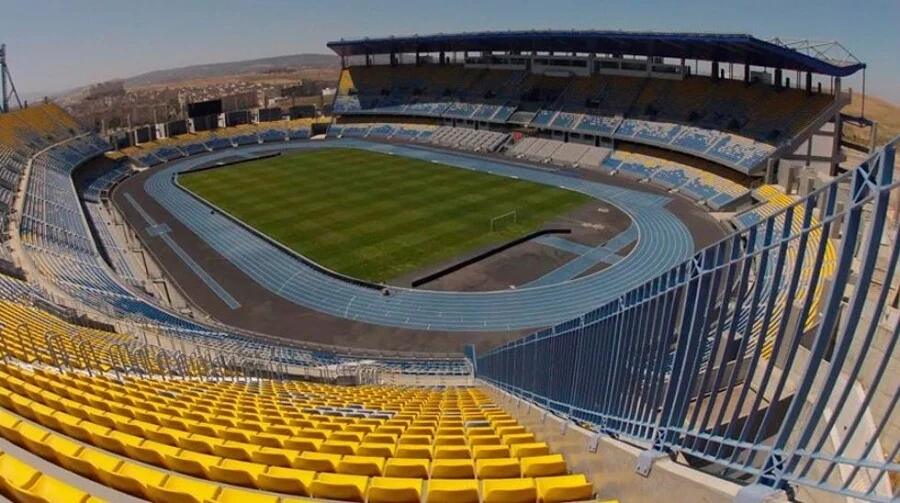
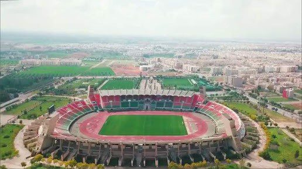

All Tournament Venues





Explore the 8 world-class stadiums set to host Africa's finest football moments
Morocco boasts some of Africa's most impressive football stadiums, with state-of-the-art facilities that will provide the perfect stage for the continent's most prestigious football tournament. The AFCON 2025 will be held across six cities, featuring stadiums that combine architectural beauty with modern functionality.
All stadiums have undergone extensive renovations to meet international standards, ensuring an unforgettable experience for both players and fans. From the iconic Stade Mohammed V in Casablanca to the majestic Grand Stade de Marrakech, these venues reflect Morocco's deep passion for football.
Casablanca
The jewel of Moroccan football, Stade Mohammed V is a historic venue that has been completely renovated for AFCON 2025. This iconic stadium will host the opening and final matches.
View DetailsAgadir
Built in 2013, this architectural marvel sits at the foot of the Atlas Mountains, offering a breathtaking backdrop for matches. The stadium features a distinctive curved design.
View DetailsMarrakech
With its striking red exterior inspired by traditional Moroccan architecture, this modern stadium is a testament to the blend of culture and sport in Marrakech.
View Details
Morocco has invested significantly in upgrading its football infrastructure for AFCON 2025. All stadiums have undergone extensive renovations to ensure they meet international standards for this prestigious tournament.
All stadiums have received new, comfortable seating with improved sightlines for an enhanced spectator experience.
High-speed Wi-Fi networks have been installed throughout venues to enhance fan experience and media coverage.
Latest hybrid grass technology has been implemented to ensure perfect playing conditions throughout the tournament.
CAF President
"The stadiums in Morocco are world-class and will provide the perfect stage for Africa's greatest football spectacle. We are confident that AFCON 2025 will be a huge success."

Morocco National Team Player
"I'm incredibly proud that my country will host AFCON 2025. The facilities are amazing, and I can't wait to play in these beautiful stadiums in front of our passionate fans."
President of Royal Moroccan Football Federation
"We have invested heavily in our infrastructure to ensure that we provide the best possible venues for AFCON 2025. These stadiums showcase Morocco's commitment to football."


{kind=link}
{kind=link}
{kind=link}
{kind=link}
{kind=link}